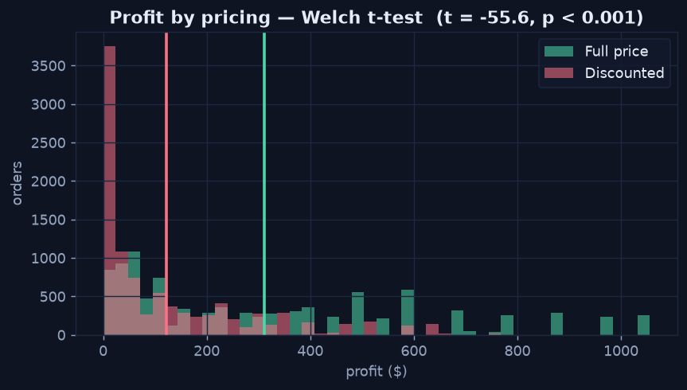
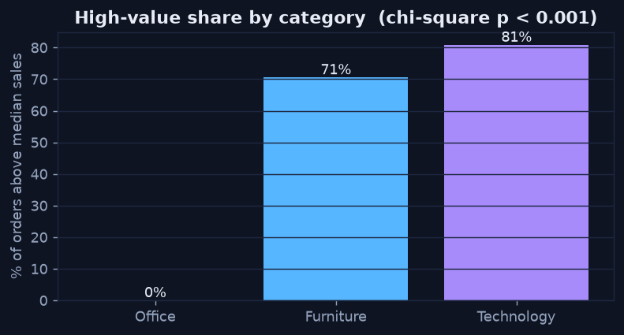

Hypothesis Testing
Chapter 2 — Signal or Noise?
A correlation points to a suspect; a statistical test decides whether the difference it produces is real or just sampling noise. Two workhorse tests cover most business questions: the t-test for the means of two groups, and the chi-square test for association between two categories. Both run below on the retail data, and both return numbers computed from that data.
The t-test — Comparing Two Group Means
Discounted orders look less profitable — but is the gap real? A Welch t-test compares the mean profit of discounted versus full-price orders. On this data it returns t = −55.6 with a p-value below 0.001, and a mean profit gap of about $188 per order. The distributions below make the result tangible: the discounted orders (red) pile up at low profit, and their mean line sits well left of the full-price mean.
Python · scipy
from scipy import stats
disc = orders.loc[orders["discount"] > 0, "profit"]
full = orders.loc[orders["discount"] == 0, "profit"]
t, p = stats.ttest_ind(disc, full, equal_var=False) # Welch
print(f"t = {t:.1f}, p = {p:.2e}, gap = {disc.mean() - full.mean():.1f}")
Discounted orders (red) cluster at low profit; the gap between the two mean lines is the effect size — about $188 per order.
The Chi-square Test — Association Between Categories
For two categorical variables, the chi-square test asks whether they are independent. Are high-value orders evenly spread across product categories, or does category matter? Here the test returns a huge chi-square with p < 0.001 — categories are not independent of order value. Technology orders, with their high unit price, are far more likely to be high-value, exactly as the chart shows.
Python · scipy
orders["high_value"] = orders["sales"] > orders["sales"].median()
table = pd.crosstab(orders["category"], orders["high_value"])
chi2, p, dof, _ = stats.chi2_contingency(table)
print(f"chi2 = {chi2:.0f}, p = {p:.2e}")
The share of above-median orders is wildly uneven by category — Technology dominates, which the chi-square test confirms is no accident.
Read the p-value Correctly
Both tests return a p-value: the probability of seeing a difference this large if there were truly no effect. A small p-value (commonly < 0.05) says the difference is unlikely to be noise — but it does not measure how big or how important the effect is. Always pair a significant result with an effect size: the actual $188 profit gap, or the percentage-point difference in high-value share. Significance answers "is it real?"; effect size answers "does it matter?"